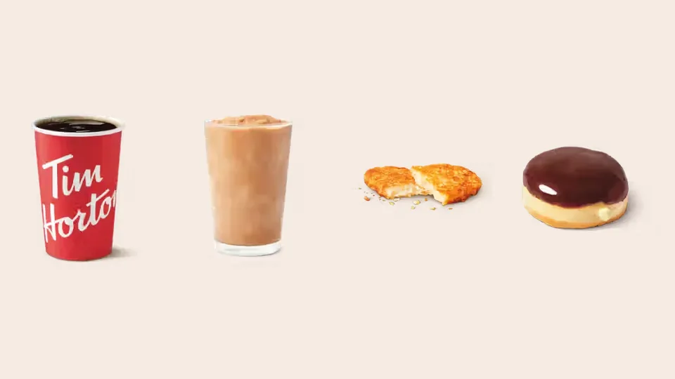

Unofficial fan guide - not affiliated with Tim Hortons
What to say at the counter and drive-thru, how to customize drinks, how to order in the app and which Tims Rewards are worth the most.
Full Menu / Blog / How to Order at Tim Hortons

To order at Tim Hortons, say the size first, then the drink, then your cream and sugar as numbers, such as "a medium double-double." Order food before drinks so your coffee doesn't go cold. Scan your Tims Rewards code before you pay. Use the app or go inside for custom or large orders.
You order at Tim Hortons the same way at the counter or the drive-thru: food first, then drinks, each drink as size, name and add-ins. Following that order matches how the crew builds it.
Tim Hortons coffee orders use a number shorthand: the first number is cream and the second is sugar. A "double-double" means two creams and two sugars, and it is the most-ordered coffee in Canada.
The Dictionary of Canadianisms on Historical Principles traces "double-double" to 1985, and it was added to the Oxford Canadian Dictionary in 2004. Tim Hortons' 2020 sales data put the Double-Double first nationally, the "regular" second and black coffee third. The cream and sugar amounts grow with the cup size, so a small and an extra large double-double taste about the same.
| What you say | What you get | Medium calories |
|---|---|---|
| Black | Brewed coffee, nothing added | 4 |
| Regular | One cream, one sugar | 100 |
| Double-double | Two creams, two sugars | 200 |
| Triple-triple | Three creams, three sugars | — |
| Four-by-four | Four creams, four sugars (rarely ordered) | — |
| "Deux-deux" | Double-double in French (useful in Quebec) | 200 |
| A "99" | Nine creams, nine sugars (a secret-menu joke order) | — |
Calories are from Tim Hortons' August 2025 Canadian nutrition guide. Triple-triple and four-by-four aren't listed in the guide, so we haven't estimated them.
Tim Hortons brewed coffee comes in four sizes in Canada: small (10 oz), medium (14 oz), large (20 oz) and extra large (24 oz). Espresso and iced drinks stop at large. The extra large is the best value by volume, at 9.8¢ per ounce compared with 15.9¢ for a small. Our coffee menu lists every size and price.
You customize a Tim Hortons drink by naming only what you want added, not what to leave out. The same Tim Hortons employee told Narcity: "We don't hear the 'no,' we hear 'sugar.'" At a noisy drive-thru, "no sugar" can easily become "sugar."
Tim Hortons offers cream, milk and dairy-free options. In Canada, the dairy-free choices are Chobani oat milk, Silk soy milk and Silk almond milk. You can add them to hot and iced drinks, but some drinks can't be made dairy-free. The Coffee Mocha, French Vanilla and Hot Chocolate are made from pre-made mixes, so changing the milk doesn't remove the dairy. Choose a brewed coffee, Americano or latte instead. Tim Hortons also has a lactose-free, high-protein dairy option, which is what goes into a Protein Latte.
Sugar is counted the same way as cream: "one," "two," and so on, scaled to the cup size. A medium double-double has 21 g of sugar. Flavour syrups add about 25 to 30 calories per pump, so a flavoured latte or seasonal drink always has more calories than the plain version. If you want less sweetness, ask for fewer pumps rather than a different drink.
Order a custom drink by listing its parts, not by its nickname from social media. Many crew members won't know what a TikTok name means. Say "a medium White Hot Chocolate with a shot of espresso," not "a Coffee Crisp." Our secret menu guide lists the popular combinations and what to say for each.
You order in the Tim Hortons app by choosing a restaurant, building your order and paying before you arrive. According to Tim Hortons' help centre, the steps are:
You then pick it up in-store, at the drive-thru or curbside, depending on the location. Some stores also deliver through the app. Many stores have a "Mobile Pickup" area at the counter. The app is also where you set your cream, sugar and espresso shots without having to say them out loud. Toppings and tea bags usually still need to be requested in person. For everything else the app does, see our Tim Hortons app guide.
Tims Rewards gives you 10 points for every dollar you spend, and you trade points for free items starting at 300 points. Points are added automatically on app orders. At the counter or drive-thru, you have to scan your Tims Rewards code.
To use a reward, select a Reward Level in the app and add an eligible item to your order. For example, if you've selected the 400-point level, have at least 400 points and add a brewed coffee, Tim Hortons deducts 400 points and the coffee is free. Points expire 12 months after the month you earned them, which the Narcity employee said catches regulars out.
The best-value Tims Rewards are a hash brown or a classic donut at 300 points, worth about 0.7¢ a point. The worst value is a 10-pack of Timbits at 800 points or a small coffee at 400, both worth 0.40¢ a point. We divided each item's listed price by its point cost to show how much each point is worth.
| Reward level | Example item | Listed price | Value per point |
|---|---|---|---|
| 300 | Hash Brown | $2.19 | 0.73¢ |
| 300 | Classic donut | $2.09 | 0.70¢ |
| 300 | Cookie (Chocolate Chunk) | $1.69 | 0.56¢ |
| 400 | Extra large brewed coffee | $2.35 | 0.59¢ |
| 400 | Small brewed coffee | $1.59 | 0.40¢ |
| 600 | French Vanilla | $3.59 | 0.60¢ |
| 600 | Original Iced Coffee | $2.89 | 0.48¢ |
| 800 | Original Iced Capp | $4.29 | 0.54¢ |
| 800 | 10 Timbits | $3.19 | 0.40¢ |
| 1,100 | Bacon Breakfast Sandwich | $4.49 | 0.41¢ |
| 1,300 | Farmer's Breakfast Wrap | $5.59 | 0.43¢ |
| 1,800 | Loaded Bowl | $9.99 | 0.56¢ |
Prices are this site's Canadian reference figures, checked on September 26, 2026, and vary by location. Point levels are from the 2026 Tims Rewards chart.
In practice, pick the most expensive item in a reward level. The 400-point level lists brewed coffee without a size, so check in the app whether your store applies it to an extra large before redeeming it on a small. At 800 points, an Iced Capp is a better use of points than 10 Timbits.
You order faster at the drive-thru by having your order, payment and rewards code ready before you reach the speaker. These tips come from a Tim Hortons employee interviewed by Narcity, plus our own ordering advice:
For a group, order Timbits by the box and coffee as a Take Twelve, not as single items. Timbits come in boxes of 10, 20 and 50, and a mixed box lets you choose the flavours. A Take Twelve is a 12-cup box of brewed coffee, listed at $19.99 before tax.
Boxes are cheaper per item. A box of 6 donuts costs $9.39, compared with $12.54 for six singles. For orders this size, the counter or the app is faster than the drive-thru. The Timbits menu and donut menu list current box prices. Not sure which donuts to choose? See the best Tim Hortons donuts, ranked.
In Quebec and other French-speaking areas, say "deux-deux" for a double-double. Not every crew member will recognize "double-double." Outside Canada, the term is listed as a menu item in the Philippines and Thailand, according to Food Republic, but it doesn't appear on American or British menus. In the US, the safest order is to say "two creams, two sugars." Our Tim Hortons in the US guide covers how the American menu differs.
Say the size, the coffee and your cream and sugar as numbers, for example "a medium double-double" or "a large black." If you want milk or a dairy-free option instead of cream, say it by name, such as "medium, two oat milk, one sugar."
A "regular" at Tim Hortons means one cream and one sugar. It was the second-most-ordered coffee in Canada in Tim Hortons' 2020 sales data, after the double-double. A medium regular has 100 calories.
A triple-triple is a coffee with three creams and three sugars. It's a step up from a double-double. It isn't in Tim Hortons' published nutrition guide, so the exact calories aren't listed.
Order food first. Crews start making each item as soon as you say it, so ordering coffee first leaves it cooling while your food cooks. Order espresso drinks before brewed coffee for the same reason.
Yes, you can order ahead in the Tim Hortons app. Choose your restaurant, build and pay for your order, then pick it up in-store, at the drive-thru or curbside, depending on the location.
Yes, Tims Rewards points expire 12 months after the month you earned them. Check your balance in the app and use points before they expire, especially if you only visit occasionally.
A free brewed coffee or tea costs 400 Tims Rewards points. Select the 400-point Reward Level in the app, add a brewed coffee and the points are deducted when you check out. The reward level lists brewed coffee without a size, so check in the app whether an extra large qualifies at your store.
Yes, Tim Hortons in Canada offers Chobani oat milk, plus Silk soy milk and Silk almond milk. You can add them to brewed coffee, lattes and iced drinks. Pre-mixed drinks like the French Vanilla and Hot Chocolate still contain dairy.
Order a secret menu drink by naming its parts, not its nickname. Crew members aren't trained on social-media names, so describe the base drink and each change. Expect to pay extra for added espresso shots or syrups.
For large or complicated orders, it's usually faster to go inside, because a long order at the drive-thru holds up every car behind you. For one or two simple drinks, the drive-thru or a mobile order is quicker.
A small brewed coffee is one of the cheapest things on the menu, at $1.59 before tax. For a snack, a cookie costs about $1.69 and a classic donut costs $2.09. Prices vary by location and province.
This is an independent, unofficial guide. It is not affiliated with, endorsed by, or sponsored by Tim Hortons or Restaurant Brands International. Ordering tips draw on Narcity's interview with a Tim Hortons employee, Food Republic, the Dictionary of Canadianisms, Tim Hortons' help centre and 2020 sales release, and Milesopedia's 2026 Tims Rewards chart. Reward values are our own calculation from this site's reference prices and change when prices do. See Sources.